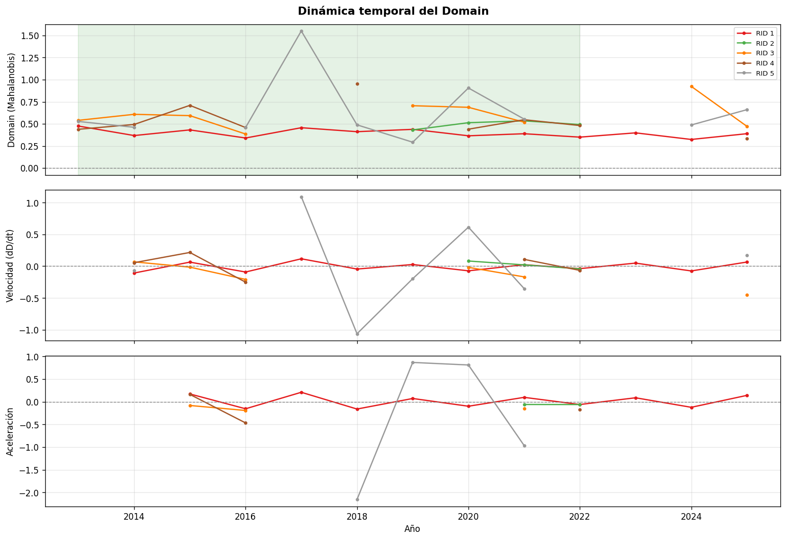

flowchart LR
A[D por cuenca · año] --> B[Velocidad V<br/>ΔD/Δt]
B --> C[Aceleración A<br/>ΔV/Δt]
C --> E[Jerk J<br/>ΔA/Δt]
B --> F[Estado dinámico: <br/>Estable · Transición <br/>· Recuperación]
B --> G[Etiquetas semánticas<br/>VEL · ACC · JERK class]
G --> H[Insumo para integración<br/>territorial]
6 Trayectoria del estado
Trayectoria del estado sistémico
Con el dominio definido, el modelo puede medir trayectoria. Saber dónde está una cuenca no es suficiente: también importa si se está alejando de su estado de referencia, con qué velocidad lo hace y si ese movimiento se está acelerando o amortiguando.
Esta etapa transforma la serie temporal de distancias D en derivadas discretas y clasifica el régimen dinámico de cada cuenca. La pregunta espacial se aborda en el capítulo siguiente, donde la trayectoria se conecta con la estructura territorial que rodea a cada unidad de análisis.
6.1 Derivadas temporales
Para tomadores de decisión
Las derivadas describen el movimiento del sistema, no solo su posición. Una cuenca puede estar lejos de su referencia pero estabilizándose, o cerca pero acelerando su alejamiento. Esa diferencia es crucial para anticipar trayectorias y priorizar intervenciones.
La base de cálculo es la serie temporal de D por cuenca, ordenada por año. Cada derivada se calcula como una diferencia discreta sobre la dimensión temporal.
6.1.1 Velocidad
La velocidad mide la tasa de cambio de la distancia al dominio entre años consecutivos:
V_t = \frac{D_t - D_{t-1}}{\Delta t}
donde \Delta t = 1 año. Valores positivos indican alejamiento del dominio de referencia; valores negativos indican retorno o recuperación. Para evitar que valores extremos producto de años faltantes distorsionen el análisis, V se recorta al rango [-5, 5].
6.1.2 Aceleración
La aceleración mide el cambio en la velocidad:
A_t = V_t - V_{t-1}
Captura si el movimiento se está intensificando (A > 0 con V > 0), desacelerando (A < 0 con V > 0) o invirtiendo su dirección. Una cuenca con velocidad moderada pero aceleración positiva sostenida representa mayor riesgo que una con velocidad alta pero aceleración negativa.
6.1.3 Jerk
El jerk es la derivada de la aceleración:
J_t = A_t - A_{t-1}
Detecta cambios bruscos en el régimen dinámico: transiciones rápidas, reversiones súbitas o señales de reorganización estructural que no serían visibles solo con V y A.

6.2 Tipología dinámica
Las tres derivadas se combinan para asignar a cada cuenca-año un estado dinámico y etiquetas semánticas por variable.
6.2.1 Estado dinámico
El estado dinámico se determina a partir del signo de V y A, con umbrales adaptativos \varepsilon_V y \varepsilon_A definidos como el percentil 25 de |V| y |A| en el año más reciente disponible. Valores por debajo del umbral se tratan como cero funcional.
| Velocidad | Aceleración | Estado |
|---|---|---|
| V \approx 0 | A \approx 0 | Estable |
| V > 0 | A > 0 | Transición Acelerada |
| V > 0 | A \approx 0 | Transición Lenta |
| V < 0 | A < 0 | Recuperación |
| Mixto | Mixto | Inestable |
6.2.2 Etiquetas semánticas
Cada derivada se clasifica de forma independiente usando un z-score robusto calculado dentro de cada año, lo que hace la clasificación relativa al comportamiento del conjunto de cuencas en ese momento:
z = \frac{x - \text{med}_{año}(x)}{\text{MAD}_{año}(x) \times 1{,}4826}
Los umbrales de corte son z < -1, -1 \leq z < -0{,}25, |z| \leq 0{,}25, 0{,}25 < z \leq 1 y z > 1, produciendo cinco categorías por derivada:
| Variable | Categorías (de menor a mayor z) |
|---|---|
| Velocidad (VEL_CLASS) | Decrecimiento Rápido · Decrecimiento Lento · Estable · Crecimiento Lento · Crecimiento Rápido |
| Aceleración (ACC_CLASS) | Desaceleración Fuerte · Desaceleración Leve · Régimen Lineal · Intensificación Leve · Intensificación Fuerte |
| Jerk (JERK_CLASS) | Reversión Fuerte · Reversión Leve · Neutro · Intensificación Leve · Intensificación Fuerte |
Estas etiquetas permiten comunicar el régimen dinámico en términos interpretables sin perder la información cuantitativa de las derivadas.
6.3 Cierre de la lectura temporal
El resultado de esta etapa es una lectura dinámica del cambio ecosistémico: D indica la posición de cada cuenca respecto de la línea base, mientras que V, A y J describen la dirección, intensidad y regularidad de su movimiento. Esta información permite distinguir cuencas estables, cuencas en recuperación y cuencas que muestran señales de transición.
La trayectoria, sin embargo, todavía no indica si ese cambio es compartido por el entorno o si corresponde a una discontinuidad localizada. Esa comparación se desarrolla en la integración territorial, donde las métricas temporales se leen junto con la vecindad espacial de cada cuenca.